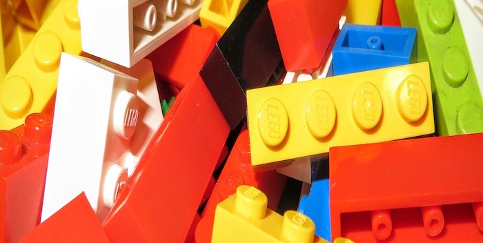

Evolution of LEGO Set

It's an analysis journey into creativity, design, and the sheer joy of playing with building blocks. Through careful study of various LEGO sets, the uncover captivating elements like trends, patterns, and unique characteristics. Moreover, delved into the evolution of LEGO sets over time and the reasons behind the popularity of certain sets. while also spotlighting the synergy of fresh ideas and imagination that shape sets cherished by people of all ages.